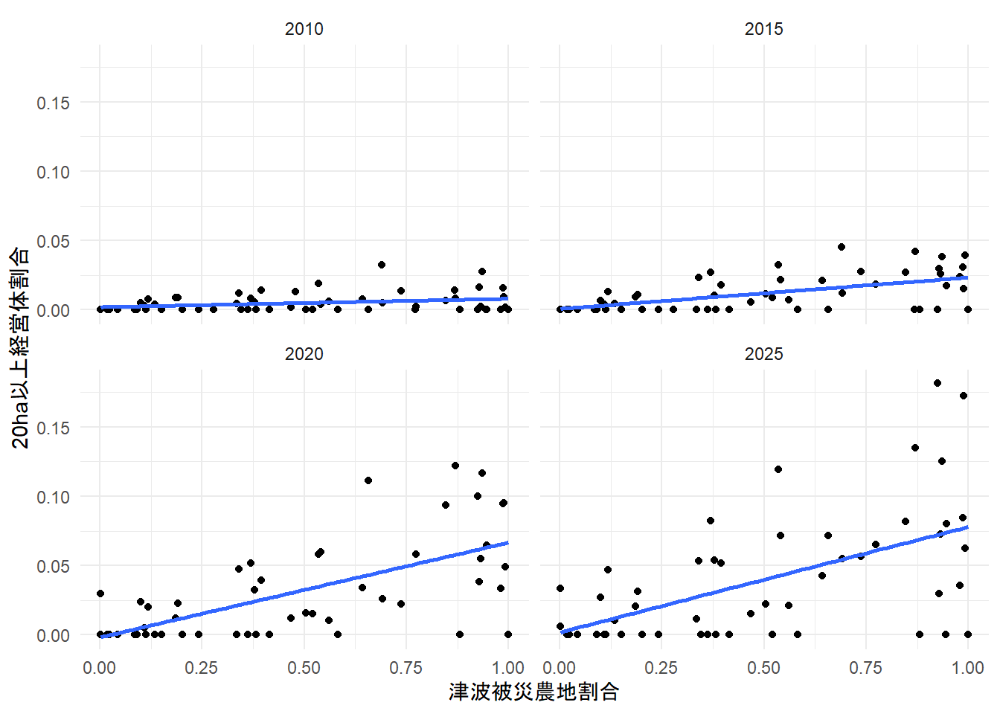

津波被災後の個人営農選択と地域農業構造
―経営資源の異質性に着目したミクロ・マクロ分析―
1 はじめに
東日本大震災の津波は、沿岸部の農地、農業機械および施設を広範囲に毀損し、それまでの地域農業構造を短期間に大きく攪乱した。その後、農地・機械・施設の復旧と並行して、農地の大区画化や組織経営体への集積が進められた。このように、既存の生産基盤が大きく失われ、集中的な復興政策が実施された津波被災地は、外的ショックを契機として地域農業構造がどのように再編されるかを検討するうえで重要な対象である。
もっとも、復興後の構造変化は一様ではない。宮城県沿岸部の旧市区町村別データをみると、津波被災農地割合の大きい地域ほど20ha以上経営体の割合が上昇する傾向がある一方、被災程度が同程度の地域間でもその割合には大きな差がみられる（ Figure 1 ）。このことは、津波被災が地域農業の大規模化を促す契機となっただけでなく、その後の構造変化が地域によって異なる経路をたどった可能性を示している。
この差を捉えるには、被災程度や事業実施と構造変化との平均的な関連だけでなく、異なる資源と将来条件をもつ経営体が同じ政策環境にどう反応したかを検討する必要がある。経営体ごとの反応が累積すれば、個別経営の拡大、組織的担い手への一元化、あるいは両者の並存といった地域農業構造の経路分岐が生じうるからである。
既往研究では、センサスによる津波被災地域の構造変化が整理されているが（小野，2019）、個別経営体の意思決定過程との接続は限定的である。津波被災関連の研究に限定しなければ、農業政策の効果が農家タイプによって異なることは広く示されてきたものの（DeBoe，2020；日田ら，2024；Saint-Cyr，2022）、観察された異質性を地域構造の変化まで追う研究は多くない。エージェント・ベース・モデルはミクロとマクロの連関を扱えるが、行動ルールの実証的基礎が課題とされている（Huber et al.，2026）。
そこで本稿は、経営体が保有する資源と将来条件の違いが、津波被災後の個人営農選択と地域農業構造にどのように関係するかを検討する。具体的には、まず宮城県S町の生産組合を対象に、構成員が個人営農を志向した条件をQCAによって明らかにする。次いで、宮城県の旧市区町村別データを用い、S町で確認された経営資源と個人営農選択の関係に整合する地域構造上の傾向が広域的にも観察されるかを検討する。
2 対象地域と農業復興政策
2.1 宮城県における被災と政策
宮城県沿岸部の耕地は津波により大きな被害を受けた。平坦部沿岸市区町村では耕地の42.1％、中山間部では28.3％が被災し、岩手県4.6％、福島県18.5％を上回った（小野，2019）。県の復興計画は原形復旧にとどまらず、効率的な土地利用と経営体の競争力向上を掲げた（宮城県，2011）。農林水産省基幹事業関係の復興交付金配分額も宮城県3,392億円、岩手県1,329億円、福島県701億円で、宮城県が最大であった（東北農政局，2021）。
農業関連の主な復興事業には、復興交付金のC-1・C-4事業と生産対策交付金が挙げられる。C-1事業（農山漁村地域復興基盤総合整備事業）は農地・農業用施設等の生産基盤を整備し、農地復旧と大区画化を進める。C-4事業（被災地域農業復興総合支援事業）は、市町村が整備した農業用機械・施設を被災農業者等に貸与する。貸与先は農事組合法人や農協等が中心で、個人は認定農業者または新規就農者に限られる（岡山，2018）。生産対策交付金は推進事業と、生産関連施設の整備のための整備事業に分かれており、推進事業では機械リース、資材の共同調達、GAPの導入などが挙げられる。仙台東部地域の農業復興の状況を報告する伊藤・小賀坂（2013）では、生産対策交付金だけではすべての農業機械・施設をそろえることが難しく、C-4事業の併用が必要であったことが指摘されている。
2.2 S町における営農再編
S町は三方を海に囲まれた面積13.27km²、人口約2万人の半農半漁の町である。震災前の耕地は田109ha、畑74haで、2010年の基幹的農業従事者の平均年齢は71.3歳と県平均65.3歳を上回っていた。水田の99.1％が津波被害を受けたため、町、JA、普及機関は生産組合を復興後の担い手として位置づけた。
しかし構成員の反応は一様ではなかった。2015年時点で4名は個人営農を優先し、農地集積によって規模を拡大した。一方、生産組合に全面的に参加したのは主として高齢者であり、組合側も個人志向の構成員を無理に組合営農へ取り込まなかった。このためS町では、生産組合への一元的集約ではなく、組合と複数の大規模個別経営が並存する構造が形成された。 Table 1 に示すように、20ha以上の経営体は2010年には存在しなかったが、2020年以降は2経営体となった。
| 年 | 5ha以上 | 10ha以上 | 20ha以上 | 30ha以上 |
|---|---|---|---|---|
| 2010 | 2 | 1 | 0 | 0 |
| 2015 | 3 | 2 | 0 | 0 |
| 2020 | 4 | 3 | 2 | 1 |
| 2025 | 4 | 2 | 2 | 1 |
資料：農林業センサス
3 QCAによる構成員の反応経路分析
3.1 データと方法
分析対象はS生産組合の構成員である。2013年10～11月に13名、2014年11月に11名へのヒアリング調査を行い、2015年8月には12名への質問紙調査を実施した。組合長、理事および個人志向の構成員には少なくとも1回の聞き取りを行った。調査項目は年齢、機械保有、営農状況、営農意向、組合への関与意向である。
QCAは集合論に基づき、帰結に結びつく条件の組み合わせを事例間比較から探索する。本稿では二値データを用いるcrisp-set QCAを採用した。帰結である「個人での営農意向」は、「個人でやる」「組合と個人の両方でやる」「規模拡大する」等の発言があれば1、「組合でやる」「個人ではやらない」であれば0とした。条件は、後継者ありを1、トラクター・コンバイン・田植機のすべてが使用可能な状態で揃う場合を「主要機械の充足」1、70歳未満を「年齢的継続余力」1とした。寿命が近いと明記された機械は保有に数えなかった。
真理値表では条件構成ごとのケース数と帰結の整合度を求め、整合度0.80以上、ケース数1以上を帰結1と判定した。十分条件の整合度は当該条件に属するケースのうち帰結も生じた割合、被覆度は帰結ケースのうち当該条件が説明する割合である。小規模な事例集合であるため、解は機械的に一般化せず、各ケースの調査記録と照合して解釈した。
各ケースのコーディング結果は Table 2 の通りである。欠損のある8, 9, 11については分析から外す。分析対象は計12分のデータである。
farmer indint successor mechcap agecap
1 1 1 0 1 1
2 2 0 1 0 1
3 3 1 0 1 1
4 4 0 0 0 0
5 5 0 0 0 1
6 6 0 0 0 1
7 7 0 0 0 0
8 8 0 NA 1 0
9 9 0 NA 0 1
10 10 0 0 0 1
11 11 1 NA 1 1
12 12 1 1 1 1
13 13 0 0 0 0
14 14 1 0 0 1
15 15 0 0 0 13.2 分析結果
farmer indint successor mechcap agecap
0 0 3 0 0
OUT: output value
n: number of cases in configuration
incl: sufficiency inclusion score
PRI: proportional reduction in inconsistency
successor mechcap agecap OUT n incl PRI cases
1 0 0 0 0 3 0.000 0.000 4,7,13
2 0 0 1 0 5 0.200 0.200 5,6,10,14,15
3 0 1 0 ? 0 - -
4 0 1 1 1 2 1.000 1.000 1,3
5 1 0 0 ? 0 - -
6 1 0 1 0 1 0.000 0.000 2
7 1 1 0 ? 0 - -
8 1 1 1 1 1 1.000 1.000 12 注：―は該当ケースがないため整合度を算出できないことを示す。
Table 3 では、主要機械が充足し、かつ年齢的継続余力がある2つの条件構成で、後継者の有無にかかわらず帰結が生じた。ブール最小化により後継者条件が消去され、「機械×年齢」が個人営農意向の十分条件となった。該当する3ケースすべてに帰結が生じ、整合度は1.00、帰結4ケース中3ケースを覆うため被覆度は0.75である。
必要条件分析では、年齢条件の整合度が1.00、被覆度が0.44であった。個人営農を希望した4名は全員70歳未満である一方、70歳未満9名のうち帰結が生じたのは4名にすぎず、年齢だけでは帰結を絞り込めない。機械条件は整合度0.75、被覆度1.00であり、元の基準では必要条件とはいえなかった。
閾値への依存を確かめるため、主要3機種中2種類以上を保有する場合を1とする機械Ⅱと、75歳未満を1とする年齢Ⅱを用いた。 Table 4 のとおり、機械と年齢の組み合わせが十分条件となる主要結果は維持された。機械Ⅱでは被覆度が1.00となり、単独でも必要条件となった。この結果は、年齢面の継続可能性を前提として、利用可能な機械という経営資源が個人営農の選択可能性を広げることを示唆する。
farmer indint successor mechcap agecap2
0 0 3 0 0
M1: mechcap*agecap2 -> indint
inclS PRI covS covU cases
-------------------------------------------------------
1 mechcap*agecap2 1.000 1.000 0.750 - 1,3; 12
-------------------------------------------------------
M1 1.000 1.000 0.750
inclN RoN covN
-----------------------------------
1 ~successor 0.750 0.222 0.300
2 successor 0.250 0.909 0.500
3 ~mechcap 0.250 0.273 0.111
4 mechcap 0.750 1.000 1.000
5 ~agecap2 0.000 0.917 0.000
6 agecap2 1.000 0.125 0.364
----------------------------------- farmer indint successor mechcap2 agecap
0 0 3 0 0
M1: mechcap2*agecap <-> indint
inclS PRI covS covU cases
----------------------------------------------------------
1 mechcap2*agecap 1.000 1.000 1.000 - 1,3,14; 12
----------------------------------------------------------
M1 1.000 1.000 1.000
inclN RoN covN
-----------------------------------
1 ~successor 0.750 0.222 0.300
2 successor 0.250 0.909 0.500
3 ~mechcap2 0.000 0.417 0.000
4 mechcap2 1.000 0.875 0.800
5 ~agecap 0.000 0.750 0.000
6 agecap 1.000 0.375 0.444
----------------------------------- 注：機械Ⅱは主要3機種中2種類以上を保有、年齢Ⅱは75歳未満。
以上のS生産組合の構成員を対象としたQCAからは、機械充足と年齢的継続余力の二条件が組み合わさるとで個人営農継続が可能となるという仮説が示唆される。既往研究では、機械喪失が離農や営農再開に影響したことが指摘されてきた（渋谷，2012；小野，2019）。これに対して本稿は、個人営農か組織営農かという営農形態の選択に着目し、機械保有が年齢的継続余力と組み合わさって個人営農意向に結びつく可能性を示した。
S生産組合はもともと大豆転作組合にすぎず、S町の担い手として位置づけようとする動きは震災後から始まったものである。組合員へのヒアリングでは、現状の組織経営の非効率や今後の方向性の不確実性に関する懸念が聞かれた。組織へのコミットを明言している組合員からは組合での営農に参加せず個人で営農拡大する組合員の存在を指摘する発言はあったものの、組合長等らは彼らを無理に組合にコミットさせるつもりはないという考えであった。一方で、機械面でも年齢面でも余裕のある組合員の中には、年を取ったら組合で営農するという主旨の発言をする者もいた。つまり、機械面・年齢面で余裕があることにより選択肢の範囲が比較的広く、現時点では将来性で未知数である組織にコミットするよりも、確実性の高い個人営農を選択したものと思われる。この選択は、新設された組織の将来性が不透明な状況において、既存の経営資源を利用して不確実性を抑えようとする対応として理解できる。
4 旧市区町村データによる広域的検討
4.1 データと分析モデル
S町で見られたような、営農余力の有無による個人営農継続への影響は、他地域でもみられる可能性がある。組織経営体に優先的に機械リースが行われたとはいえ、個人での営農継続が可能であるならば、個人での営農を継続する方が合理的な面があると考えられる。小野ら(2020)によれば、震災後、組織経営体の集積率は全体として上昇しているが、幸田ら（2019）によれば、急激に経営規模を拡大するなかでは農地分散などの問題が発生することもあるという。とくに震災後新設した組織の場合は不確実性がいっそう強くなる。そうしたリスクを考慮するなら、個人での営農を継続できるうちは継続した方が不確実性を減らすことができるのである。
このような営農余力と個人営農継続の関係が、宮城県内の津波被災地域でも観察されるかを旧市区町村単位で検討する。ただし、QCAで重要であった機械充足と年齢との組み合わせは集計データから復元できず、広域分析は機械保有という一側面との整合性確認に限定される。したがって、以降の分析は旧市区町村分析はQCAで得られた条件構成を直接検証するものではない。個人営農の選択可能性を構成する一要素として示された機械保有が、地域単位の個人経営体数の変化とも整合的な関係を示すかを探索的に検討するものである。以下では次のような仮説を検証する。
仮説：機械所有個人経営体割合の大きい地域ほど個人経営体数の残存率が大きい
目的変数は2015年の個人経営体数を2010年の個人経営体数で除した「個人経営体残存率」である。個人経営体数を直接目的変数とするとその地域の規模を強く反映した変数となり、分析の主旨とずれるため、残存率を目的変数とする。ただし同一経営体の存続を追跡した値ではないため、これはあくまで地域全体の個人経営体数の残存比である。なお、分析の後半では2015年ではなく2020年の個人経営体数を用いた残存率についても検討する。
説明変数には、C-1、C-4、生産対策交付金の実施ダミー、2010年のコンバイン・トラクター・田植機所有個人経営体割合を用いた。事業ダミーは実施地区と旧市区町村境界の位置関係をGISで照合して作成した。生産対策交付金は機械導入に関する事業のみを数えた。各機械の所有個人経営体割合は、センサスで非個人経営体の機械所有数が得られないため、「機械所有経営体数－非個人経営体数」を個人経営体数で除した代理変数を用いる。非個人経営体のすべてが当該機械を持つと仮定するため、推定される個人所有数は下限値となる。統制変数は2010年の個人経営体割合と津波被災圃場割合である。後者は2009年国土数値情報の土地利用メッシュから「田」と「その他の農用地」を抽出し、国土地理院の津波浸水範囲および2010年農業集落境界データに収録された旧市区町村境界と重ね合わせ、旧市区町村別の被災圃場面積を推計した1。被災圃場が確認された地域のみを分析対象とした。
Table 6 は分析に使用する変数の記述統計量である。
# A tibble: 1 × 5
n mean sd min max
<int> <dbl> <dbl> <dbl> <dbl>
1 53 0.58 0.21 0.17 0.95# A tibble: 1 × 5
n mean sd min max
<int> <dbl> <dbl> <dbl> <dbl>
1 57 0.39 0.18 0 0.73# A tibble: 1 × 5
n mean sd min max
<int> <dbl> <dbl> <dbl> <dbl>
1 57 0.56 0.5 0 1# A tibble: 1 × 5
n mean sd min max
<int> <dbl> <dbl> <dbl> <dbl>
1 57 0.47 0.5 0 1# A tibble: 1 × 5
n mean sd min max
<int> <dbl> <dbl> <dbl> <dbl>
1 57 0.28 0.45 0 14.2 推定結果
復興事業の実施は被災程度と独立ではない。津波被災圃場割合を説明変数とするロジットモデルのオッズ比は、C-1が28.81、C-4が18.36、生産対策交付金が16.10で、いずれも1％水準で有意であった。事業間の相関係数はC-1とC-4が0.56、C-1と生産対策交付金が0.32、C-4と生産対策交付金が0.35である。そこでOLSでは3事業を同時に投入し、津波被災圃場割合を統制した。
Table 16 では、C-4実施、コンバイン所有割合、津波被災圃場割合が有意であった。他の条件を一定とすると、C-4実施地域は個人経営体残存率が15ポイント低い。コンバイン所有割合が10ポイント高い地域では残存率が5ポイント高く、津波被災圃場割合が10ポイント高い地域では3.4ポイント低い。なお、小規模地域では少数の個人経営体の増減によって残存率が大きく変動しやすく、不均一分散が生じている可能性がある。この点を考慮し、HC3ロバスト標準誤差によって検定した。その結果、津波被災圃場割合およびC-4実施の負の関連と、コンバイン所有割合の正の関連はいずれも5％水準で有意であり、通常の標準誤差を用いた場合と有意性の判定は変わらなかった。
M2およびM3も、小規模地域の値が推定結果に及ぼす影響を確認するためのモデルである。M2では2010年の個人経営体数をウェイトとして、大規模地域を相対的に重視した推定を行った。M3では2010年の個人経営体数が第1四分位以下の地域を除外した。M4では、残存率の増減が比率尺度上で非対称となることを考慮し、目的変数を対数変換した。例えば、残存率が2倍になる変化と2分の1になる変化は、対数尺度上ではそれぞれ同じ大きさの正負の変化として表される。これらのモデルでも主要変数の係数の符号は維持され、津波被災圃場割合とコンバイン所有割合の関連は一貫して確認された。C-4の係数も一貫して負であったが、M2およびM3では有意水準が10％に低下した。
Call:
lm(formula = individual_2015_2010_ratio ~ individual_share_2010 +
tsunami_farmland_share_2010 + c_one + c_four + production_support +
individual_combine_owner_share_min_2010 + individual_tractor_owner_share_min_2010 +
individual_rice_transplanter_owner_share_min_2010, data = machinery_change)
Residuals:
Min 1Q Median 3Q Max
-0.27980 -0.07836 -0.00461 0.06138 0.45656
Coefficients:
Estimate Std. Error t value
(Intercept) -0.28821 0.70408 -0.409
individual_share_2010 0.81493 0.74553 1.093
tsunami_farmland_share_2010 -0.33987 0.08545 -3.977
c_one 0.05524 0.05659 0.976
c_four -0.14828 0.06059 -2.447
production_support 0.01937 0.05583 0.347
individual_combine_owner_share_min_2010 0.49638 0.20467 2.425
individual_tractor_owner_share_min_2010 0.35269 0.25417 1.388
individual_rice_transplanter_owner_share_min_2010 -0.25591 0.22349 -1.145
Pr(>|t|)
(Intercept) 0.684271
individual_share_2010 0.280308
tsunami_farmland_share_2010 0.000256 ***
c_one 0.334337
c_four 0.018458 *
production_support 0.730332
individual_combine_owner_share_min_2010 0.019471 *
individual_tractor_owner_share_min_2010 0.172244
individual_rice_transplanter_owner_share_min_2010 0.258382
---
Signif. codes: 0 '***' 0.001 '**' 0.01 '*' 0.05 '.' 0.1 ' ' 1
Residual standard error: 0.1523 on 44 degrees of freedom
(4 observations deleted due to missingness)
Multiple R-squared: 0.542, Adjusted R-squared: 0.4588
F-statistic: 6.51 on 8 and 44 DF, p-value: 1.415e-05 individual_share_2010
1.645393
tsunami_farmland_share_2010
1.835910
c_one
1.813919
c_four
2.097307
production_support
1.501795
individual_combine_owner_share_min_2010
2.360583
individual_tractor_owner_share_min_2010
2.076706
individual_rice_transplanter_owner_share_min_2010
2.858124 [1] 53
t test of coefficients:
Estimate Std. Error t value
(Intercept) -0.288211 0.594436 -0.4848
individual_share_2010 0.814926 0.629356 1.2949
tsunami_farmland_share_2010 -0.339869 0.080245 -4.2354
c_one 0.055242 0.065877 0.8386
c_four -0.148284 0.071926 -2.0616
production_support 0.019368 0.049941 0.3878
individual_combine_owner_share_min_2010 0.496376 0.189350 2.6215
individual_tractor_owner_share_min_2010 0.352690 0.299430 1.1779
individual_rice_transplanter_owner_share_min_2010 -0.255907 0.300669 -0.8511
Pr(>|t|)
(Intercept) 0.6301898
individual_share_2010 0.2021235
tsunami_farmland_share_2010 0.0001145 ***
c_one 0.4062435
c_four 0.0451812 *
production_support 0.7000190
individual_combine_owner_share_min_2010 0.0119773 *
individual_tractor_owner_share_min_2010 0.2451802
individual_rice_transplanter_owner_share_min_2010 0.3993083
---
Signif. codes: 0 '***' 0.001 '**' 0.01 '*' 0.05 '.' 0.1 ' ' 1N=53、自由度修正済R²=0.46、F(8,44)=6.51（p<0.001）。VIFはすべて3未満。 * p<0.05、** p<0.01、*** p<0.001。
Call:
lm(formula = individual_2015_2010_ratio ~ individual_share_2010 +
tsunami_farmland_share_2010 + c_one + c_four + production_support +
individual_combine_owner_share_min_2010 + individual_tractor_owner_share_min_2010 +
individual_rice_transplanter_owner_share_min_2010, data = machinery_change,
weights = individual_entities_2010)
Weighted Residuals:
Min 1Q Median 3Q Max
-4.0549 -1.3877 -0.2045 0.6377 4.6522
Coefficients:
Estimate Std. Error t value
(Intercept) -0.07011 1.45319 -0.048
individual_share_2010 0.88879 1.50743 0.590
tsunami_farmland_share_2010 -0.42546 0.09248 -4.601
c_one 0.04814 0.05272 0.913
c_four -0.09791 0.05695 -1.719
production_support -0.03846 0.04923 -0.781
individual_combine_owner_share_min_2010 0.57569 0.20899 2.755
individual_tractor_owner_share_min_2010 0.35836 0.33089 1.083
individual_rice_transplanter_owner_share_min_2010 -0.68533 0.29915 -2.291
Pr(>|t|)
(Intercept) 0.96174
individual_share_2010 0.55847
tsunami_farmland_share_2010 3.56e-05 ***
c_one 0.36614
c_four 0.09260 .
production_support 0.43892
individual_combine_owner_share_min_2010 0.00851 **
individual_tractor_owner_share_min_2010 0.28471
individual_rice_transplanter_owner_share_min_2010 0.02681 *
---
Signif. codes: 0 '***' 0.001 '**' 0.01 '*' 0.05 '.' 0.1 ' ' 1
Residual standard error: 1.957 on 44 degrees of freedom
(4 observations deleted due to missingness)
Multiple R-squared: 0.5818, Adjusted R-squared: 0.5058
F-statistic: 7.652 on 8 and 44 DF, p-value: 2.332e-06 individual_share_2010
1.202414
tsunami_farmland_share_2010
2.343270
c_one
1.665790
c_four
2.193903
production_support
1.632417
individual_combine_owner_share_min_2010
2.247615
individual_tractor_owner_share_min_2010
1.870187
individual_rice_transplanter_owner_share_min_2010
2.165613 [1] 53
Call:
lm(formula = individual_2015_2010_ratio ~ individual_share_2010 +
tsunami_farmland_share_2010 + c_one + c_four + production_support +
individual_combine_owner_share_min_2010 + individual_tractor_owner_share_min_2010 +
individual_rice_transplanter_owner_share_min_2010, data = machinery_change_75)
Residuals:
Min 1Q Median 3Q Max
-0.23763 -0.09512 0.00407 0.05099 0.44757
Coefficients:
Estimate Std. Error t value
(Intercept) 0.291491 1.771993 0.164
individual_share_2010 0.434451 1.831886 0.237
tsunami_farmland_share_2010 -0.376451 0.113254 -3.324
c_one 0.039777 0.062288 0.639
c_four -0.118911 0.069914 -1.701
production_support 0.005205 0.063717 0.082
individual_combine_owner_share_min_2010 0.595495 0.260973 2.282
individual_tractor_owner_share_min_2010 0.323610 0.410561 0.788
individual_rice_transplanter_owner_share_min_2010 -0.576229 0.359749 -1.602
Pr(>|t|)
(Intercept) 0.87031
individual_share_2010 0.81396
tsunami_farmland_share_2010 0.00213 **
c_one 0.52736
c_four 0.09811 .
production_support 0.93537
individual_combine_owner_share_min_2010 0.02888 *
individual_tractor_owner_share_min_2010 0.43603
individual_rice_transplanter_owner_share_min_2010 0.11846
---
Signif. codes: 0 '***' 0.001 '**' 0.01 '*' 0.05 '.' 0.1 ' ' 1
Residual standard error: 0.156 on 34 degrees of freedom
(1 observation deleted due to missingness)
Multiple R-squared: 0.5262, Adjusted R-squared: 0.4147
F-statistic: 4.72 on 8 and 34 DF, p-value: 0.0005917 individual_share_2010
1.319934
tsunami_farmland_share_2010
2.298495
c_one
1.601199
c_four
2.129354
production_support
1.675513
individual_combine_owner_share_min_2010
2.098207
individual_tractor_owner_share_min_2010
1.870323
individual_rice_transplanter_owner_share_min_2010
2.486348 [1] 43
Call:
lm(formula = log_individual_2015_2010_ratio ~ individual_share_2010 +
tsunami_farmland_share_2010 + c_one + c_four + production_support +
individual_combine_owner_share_min_2010 + individual_tractor_owner_share_min_2010 +
individual_rice_transplanter_owner_share_min_2010, data = machinery_change)
Residuals:
Min 1Q Median 3Q Max
-0.71141 -0.14603 0.00269 0.12295 0.76450
Coefficients:
Estimate Std. Error t value
(Intercept) -1.86253 1.41190 -1.319
individual_share_2010 1.23600 1.49504 0.827
tsunami_farmland_share_2010 -0.64801 0.17135 -3.782
c_one 0.13833 0.11349 1.219
c_four -0.32469 0.12151 -2.672
production_support 0.07186 0.11197 0.642
individual_combine_owner_share_min_2010 1.10768 0.41044 2.699
individual_tractor_owner_share_min_2010 0.49195 0.50970 0.965
individual_rice_transplanter_owner_share_min_2010 -0.52803 0.44817 -1.178
Pr(>|t|)
(Intercept) 0.193940
individual_share_2010 0.412848
tsunami_farmland_share_2010 0.000466 ***
c_one 0.229387
c_four 0.010529 *
production_support 0.524339
individual_combine_owner_share_min_2010 0.009834 **
individual_tractor_owner_share_min_2010 0.339727
individual_rice_transplanter_owner_share_min_2010 0.245054
---
Signif. codes: 0 '***' 0.001 '**' 0.01 '*' 0.05 '.' 0.1 ' ' 1
Residual standard error: 0.3054 on 44 degrees of freedom
(4 observations deleted due to missingness)
Multiple R-squared: 0.5301, Adjusted R-squared: 0.4447
F-statistic: 6.206 on 8 and 44 DF, p-value: 2.34e-05 individual_share_2010
1.645393
tsunami_farmland_share_2010
1.835910
c_one
1.813919
c_four
2.097307
production_support
1.501795
individual_combine_owner_share_min_2010
2.360583
individual_tractor_owner_share_min_2010
2.076706
individual_rice_transplanter_owner_share_min_2010
2.858124 [1] 53Table 20 は、2010年から2020年の個人経営体残存率を用いた分析結果であり、M5は基本モデル、M6は個人経営体による重み付きモデル、M7は小規模地域除外モデル、M8は目的変数を対数変換したモデルである。津波被災圃場割合の負の関連は一貫して確認された( Table 20 )。C-4も多くのモデルで負の関連を示した。一方、機械所有割合については、コンバインの正の関連が複数のモデルで確認されたものの、サンプルの限定や重み付けによって有意となる機種が変化しており、機種別の結果は2015年モデルほど一貫していない。震災直後の経営資源は短期的な継続と結びつくが、10年間には追加投資、継承、再編等が介在するためと考えられる。
Call:
lm(formula = individual_2020_2010_ratio ~ individual_share_2010 +
tsunami_farmland_share_2010 + c_one + c_four + production_support +
individual_combine_owner_share_min_2010 + individual_tractor_owner_share_min_2010 +
individual_rice_transplanter_owner_share_min_2010, data = machinery_change)
Residuals:
Min 1Q Median 3Q Max
-0.248641 -0.080066 0.005598 0.077756 0.291172
Coefficients:
Estimate Std. Error t value
(Intercept) 0.35138 0.55504 0.633
individual_share_2010 0.07202 0.58319 0.123
tsunami_farmland_share_2010 -0.23254 0.07013 -3.316
c_one -0.03561 0.04824 -0.738
c_four -0.10902 0.04899 -2.225
production_support 0.07149 0.04998 1.430
individual_combine_owner_share_min_2010 0.38573 0.17994 2.144
individual_tractor_owner_share_min_2010 0.01528 0.16471 0.093
individual_rice_transplanter_owner_share_min_2010 0.01336 0.14770 0.090
Pr(>|t|)
(Intercept) 0.52969
individual_share_2010 0.90224
tsunami_farmland_share_2010 0.00175 **
c_one 0.46405
c_four 0.03080 *
production_support 0.15905
individual_combine_owner_share_min_2010 0.03716 *
individual_tractor_owner_share_min_2010 0.92646
individual_rice_transplanter_owner_share_min_2010 0.92832
---
Signif. codes: 0 '***' 0.001 '**' 0.01 '*' 0.05 '.' 0.1 ' ' 1
Residual standard error: 0.1388 on 48 degrees of freedom
Multiple R-squared: 0.4777, Adjusted R-squared: 0.3907
F-statistic: 5.488 on 8 and 48 DF, p-value: 6.187e-05 individual_share_2010
1.306868
tsunami_farmland_share_2010
1.565569
c_one
1.696363
c_four
1.771481
production_support
1.492872
individual_combine_owner_share_min_2010
2.491043
individual_tractor_owner_share_min_2010
1.875365
individual_rice_transplanter_owner_share_min_2010
1.774679 [1] 57
t test of coefficients:
Estimate Std. Error t value
(Intercept) 0.351382 0.902795 0.3892
individual_share_2010 0.072016 0.949869 0.0758
tsunami_farmland_share_2010 -0.232542 0.085414 -2.7225
c_one -0.035606 0.061857 -0.5756
c_four -0.109015 0.071780 -1.5187
production_support 0.071490 0.049080 1.4566
individual_combine_owner_share_min_2010 0.385728 0.199236 1.9360
individual_tractor_owner_share_min_2010 0.015283 0.429382 0.0356
individual_rice_transplanter_owner_share_min_2010 0.013356 0.292447 0.0457
Pr(>|t|)
(Intercept) 0.698838
individual_share_2010 0.939880
tsunami_farmland_share_2010 0.009003 **
c_one 0.567560
c_four 0.135388
production_support 0.151737
individual_combine_owner_share_min_2010 0.058764 .
individual_tractor_owner_share_min_2010 0.971754
individual_rice_transplanter_owner_share_min_2010 0.963764
---
Signif. codes: 0 '***' 0.001 '**' 0.01 '*' 0.05 '.' 0.1 ' ' 1モデルの定義と有意水準は Table 16 と同じ。
Call:
lm(formula = individual_2020_2010_ratio ~ individual_share_2010 +
tsunami_farmland_share_2010 + c_one + c_four + production_support +
individual_combine_owner_share_min_2010 + individual_tractor_owner_share_min_2010 +
individual_rice_transplanter_owner_share_min_2010, data = machinery_change,
weights = individual_entities_2010)
Weighted Residuals:
Min 1Q Median 3Q Max
-2.8288 -1.0958 -0.4346 0.6201 4.7770
Coefficients:
Estimate Std. Error t value
(Intercept) 0.21747 1.13816 0.191
individual_share_2010 0.06916 1.17784 0.059
tsunami_farmland_share_2010 -0.30995 0.07364 -4.209
c_one 0.01193 0.04287 0.278
c_four -0.08645 0.04551 -1.900
production_support -0.01630 0.03957 -0.412
individual_combine_owner_share_min_2010 0.36484 0.16725 2.181
individual_tractor_owner_share_min_2010 0.65076 0.25577 2.544
individual_rice_transplanter_owner_share_min_2010 -0.47583 0.23115 -2.058
Pr(>|t|)
(Intercept) 0.849275
individual_share_2010 0.953422
tsunami_farmland_share_2010 0.000112 ***
c_one 0.781967
c_four 0.063482 .
production_support 0.682135
individual_combine_owner_share_min_2010 0.034081 *
individual_tractor_owner_share_min_2010 0.014221 *
individual_rice_transplanter_owner_share_min_2010 0.044994 *
---
Signif. codes: 0 '***' 0.001 '**' 0.01 '*' 0.05 '.' 0.1 ' ' 1
Residual standard error: 1.596 on 48 degrees of freedom
Multiple R-squared: 0.5711, Adjusted R-squared: 0.4996
F-statistic: 7.988 on 8 and 48 DF, p-value: 8.979e-07 individual_share_2010
1.167208
tsunami_farmland_share_2010
2.239687
c_one
1.665463
c_four
2.126237
production_support
1.596544
individual_combine_owner_share_min_2010
2.244032
individual_tractor_owner_share_min_2010
1.866832
individual_rice_transplanter_owner_share_min_2010
2.066069 [1] 57
Call:
lm(formula = individual_2020_2010_ratio ~ individual_share_2010 +
tsunami_farmland_share_2010 + c_one + c_four + production_support +
individual_combine_owner_share_min_2010 + individual_tractor_owner_share_min_2010 +
individual_rice_transplanter_owner_share_min_2010, data = machinery_change_75)
Residuals:
Min 1Q Median 3Q Max
-0.242002 -0.059144 -0.008657 0.047623 0.266204
Coefficients:
Estimate Std. Error t value
(Intercept) 0.947595 1.358242 0.698
individual_share_2010 -0.948756 1.411355 -0.672
tsunami_farmland_share_2010 -0.230161 0.086431 -2.663
c_one 0.008862 0.048077 0.184
c_four -0.126655 0.052907 -2.394
production_support 0.013722 0.048711 0.282
individual_combine_owner_share_min_2010 0.239228 0.201944 1.185
individual_tractor_owner_share_min_2010 0.867273 0.317556 2.731
individual_rice_transplanter_owner_share_min_2010 -0.306384 0.269063 -1.139
Pr(>|t|)
(Intercept) 0.49000
individual_share_2010 0.50585
tsunami_farmland_share_2010 0.01163 *
c_one 0.85482
c_four 0.02216 *
production_support 0.77983
individual_combine_owner_share_min_2010 0.24415
individual_tractor_owner_share_min_2010 0.00982 **
individual_rice_transplanter_owner_share_min_2010 0.26256
---
Signif. codes: 0 '***' 0.001 '**' 0.01 '*' 0.05 '.' 0.1 ' ' 1
Residual standard error: 0.1208 on 35 degrees of freedom
Multiple R-squared: 0.6, Adjusted R-squared: 0.5086
F-statistic: 6.562 on 8 and 35 DF, p-value: 3.229e-05 individual_share_2010
1.320473
tsunami_farmland_share_2010
2.235396
c_one
1.613824
c_four
2.072187
production_support
1.656684
individual_combine_owner_share_min_2010
2.252886
individual_tractor_owner_share_min_2010
2.070330
individual_rice_transplanter_owner_share_min_2010
2.584521 [1] 44
Call:
lm(formula = log_individual_2020_2010_ratio ~ individual_share_2010 +
tsunami_farmland_share_2010 + c_one + c_four + production_support +
individual_combine_owner_share_min_2010 + individual_tractor_owner_share_min_2010 +
individual_rice_transplanter_owner_share_min_2010, data = machinery_change2)
Residuals:
Min 1Q Median 3Q Max
-1.95070 -0.20075 0.07537 0.22742 0.84037
Coefficients:
Estimate Std. Error t value
(Intercept) -1.52497 2.29065 -0.666
individual_share_2010 1.38435 2.41235 0.574
tsunami_farmland_share_2010 -0.96889 0.29050 -3.335
c_one -0.09504 0.19987 -0.475
c_four -0.22240 0.20513 -1.084
production_support 0.26508 0.20672 1.282
individual_combine_owner_share_min_2010 2.40690 0.74194 3.244
individual_tractor_owner_share_min_2010 -0.85926 0.68040 -1.263
individual_rice_transplanter_owner_share_min_2010 -0.76649 0.61395 -1.248
Pr(>|t|)
(Intercept) 0.50883
individual_share_2010 0.56880
tsunami_farmland_share_2010 0.00167 **
c_one 0.63664
c_four 0.28380
production_support 0.20602
individual_combine_owner_share_min_2010 0.00217 **
individual_tractor_owner_share_min_2010 0.21286
individual_rice_transplanter_owner_share_min_2010 0.21804
---
Signif. codes: 0 '***' 0.001 '**' 0.01 '*' 0.05 '.' 0.1 ' ' 1
Residual standard error: 0.572 on 47 degrees of freedom
Multiple R-squared: 0.4188, Adjusted R-squared: 0.3199
F-statistic: 4.233 on 8 and 47 DF, p-value: 0.0006983 individual_share_2010
1.315349
tsunami_farmland_share_2010
1.580878
c_one
1.689832
c_four
1.791343
production_support
1.492784
individual_combine_owner_share_min_2010
2.437307
individual_tractor_owner_share_min_2010
1.861681
individual_rice_transplanter_owner_share_min_2010
1.761138 [1] 565 考察
第一に、S町では年齢と機械保有の組み合わせが個人営農意向を強く規定していた。若くても機械がなければ個人営農を選べず、機械があっても高齢であれば継続は難しい。両条件の結合は、単なる属性ではなく、復興後に個人営農を「選べる」実行可能性を表している。構成員間の実行可能性の差が、同じ生産組合の内部に個人志向と組織志向を生み、結果として複数の大規模経営体と組織経営体の並存へつながったと解釈できる。
第二に、旧市区町村分析でも、震災前のコンバイン所有割合が2015年までの個人経営体数の残存と正に関連した。コンバインは3機種のうち所有割合が最も低く、平均31％であるため、個別経営が営農を再開・継続できる経営資源の厚みを識別した可能性がある。この結果は年齢との結合を直接検証したものではないが、S町で観察されたメカニズムと整合的である。
第三に、C-4実施と個人経営体残存率の負の関連は、一部地域で機械・施設が組織経営体に集中的に配分され、個別経営の減少と組織化が同時に進んだ可能性を示す。しかし、事業は被災程度や地域の復興方針に応じて選択されており、実施ダミーは内生的である。津波被災圃場割合を統制しても、観察されない選択要因は残る。したがって、この係数をC-4の因果的な政策効果、まして個別経営を退出させた効果と解釈することはできない。ここで重要なのは、同じ支援でも既存資源や年齢構成により受け皿と反応が異なり、最終的な経営体構成も異なりうる点である。
分析には三つの限界がある。第一に、QCAは単一組織の12ケースを対象としており、未観察の条件や調査時点間の変化を十分に捉えていない。第二に、旧市区町村データは集計値であり、個々の経営体の年齢と機械保有の組み合わせや同一経営体の存続を確認できない。第三に、政策配置の内生性を解消していない。今後は農業集落単位のパネルデータと経営体個票を用い、被災前の条件、政策実施、経営体の移行、地域構造の変化を多層的に接続する必要がある。
6 結論
津波被災後の地域農業構造は、被災や復興事業から直接かつ一様に生じるのではなく、異質な経営体の選択が累積して形成される。S町では、年齢的継続余力と主要機械の充足の組み合わせが個人営農意向の十分条件となり、宮城県の旧市区町村分析でも、震災前のコンバイン所有割合が短期的な個人経営体残存率と正に関連した。政策評価では平均的効果だけでなく、誰が支援を利用でき、個別継続と組織参加のどちらを選べたのか、その集積が地域の担い手構造をどう変えたのかを追跡する必要がある。
7 引用文献
DeBoe, Gwendolen. Impacts of Agricultural Policies on Productivity and Sustainability Performance in Agriculture: A Literature Review. OECD Food, Agriculture and Fisheries Papers, 2020.
Huber, Robert, Jesús Barreiro-Hurlé & Robert Finger. Behavioural and social factors in farm-level agent-based models for European agricultural policy evaluations. European Review of Agricultural Economics, 2026.
日田アトム, 澤内大輔, 近藤功庸, シモーネ・セヴェリー二 , 山本康貴「農業者戸別所得補償制度の導入が稲作生産性水準に及ぼした影響」, 『経済研究』, 75(1), 2024. pp1–27.
岡山信夫「東日本大震災からの農業復興を支える制度─震災後７年の取組み─」, 『農林金融』, 71(3), 2018. pp34–50.
小野智昭「東日本大震災津波被災地域における水田農業の復興と構造変化―2015年農林業センサスによる統計的分析―」, 『農林水産政策研究』, 30, 2019. pp23–59.
Saint-Cyr, Legrand. Heterogeneous Farm‐size Dynamics and Impacts of Subsidies from Agricultural Policy: Evidence from France. Journal of Agricultural Economics, 73(3), 2022. pp.893–923.
宮城県（2011）『みやぎの農業・農村復興計画』
東北農政局（2021）『農業・農村の復興・再生に向けた取組と動き』
伊藤房雄, と小賀坂行也. 2013年. 「宮城県における被災地の農業復旧の現状と復興に向けた課題」. 農村と都市をむすぶ 736: 5–12.
渋谷往男. 2012年. 「東日本大震災被災農家の営農継続意向とその要因についての考察」. 農業経営研究.
小野智昭, 吉田行郷, 石原清史, ほか. 2020年. 「東日本大震災津波被災地域における水田農業復興の現状―農業構造変化と組織経営体の諸特徴―」. 農林水産政策研究, 号 33 (12月): 31–62.
幸田和也, 福与徳文, 重岡徹と八木洋憲. 2019年. 「津波被災地における急速な農地集積の進展と課題」. 農業経済研究 91 (2): 269–74.
2011年 農林水産省大臣官房統計部農村振興局「津波により流失や冠水等の被害を受けた農地の推定面積」https://www.maff.go.jp/j/press/nousin/sekkei/pdf/110329-02.pdf
Footnotes
GISから算出した旧市区町村別の津波被災面積を現在の市町村単位に換算したところ、市町村別の津波被災面積の農林水産省公表値(農林水産省大臣官房統計部農村振興局2011)と高い相関を示した（r = 0.953）。さらに田に限定した被災面積では相関は r = 0.976 まで上昇した。したがって、本研究で作成したGISベースの津波被災指標は、地域間の被災程度の差を概ね適切に捉えていると判断した。↩︎